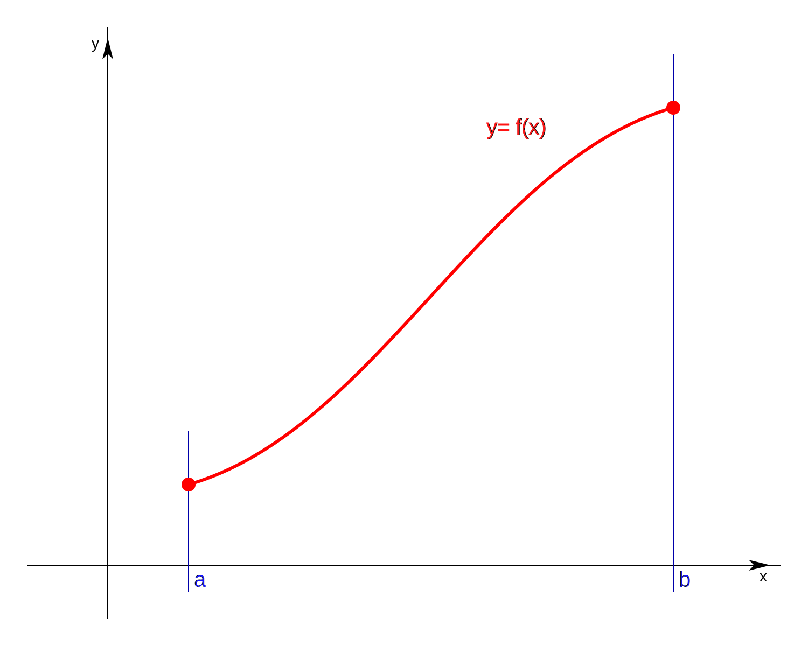

Cálculo diferencial
El cálculo diferencial es una parte del cálculo infinitesimal y del análisis matemático que estudia cómo cambian las funciones continuas según sus variables cambian de estado. El principal objeto de estudio en el cálculo diferencial es la derivada. Una noción estrechamente relacionada es la de diferencial de una función.
- Nestor Flores Meza.
Derivada
La derivada es uno de los conceptos mas importantes en matematicas, la derivada es el resultado de un limite y representa la pendinte de la recta angente a la graffica de la funion en un punto.